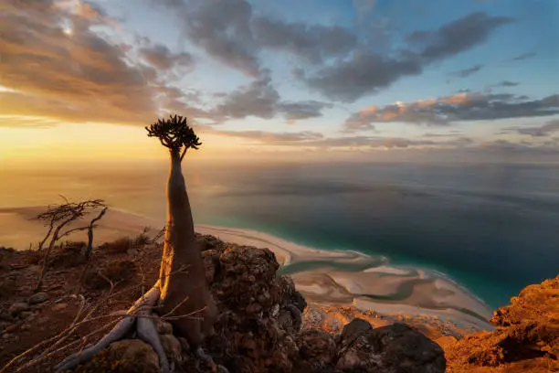
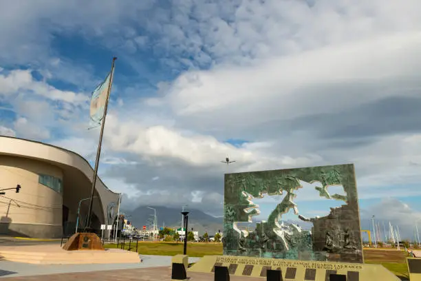
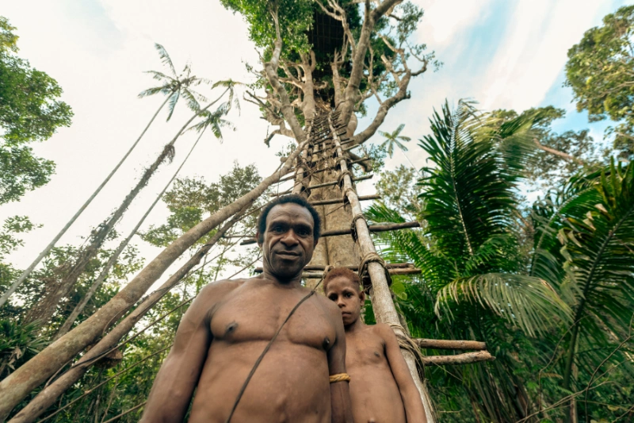
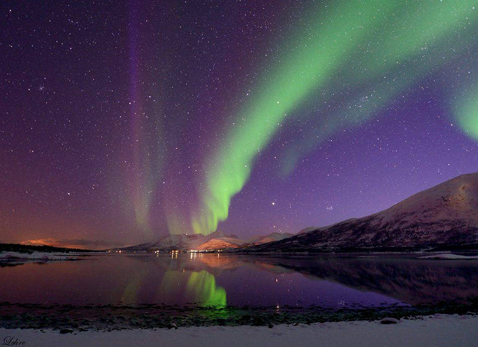
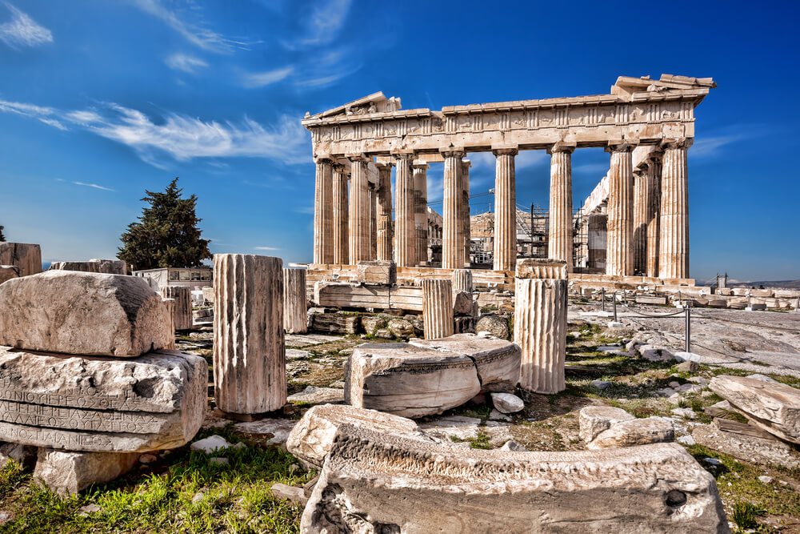

Socotra: El santuario de lo extraño
La isla de Socotra estuvo aislada millones de años, lo que permitió la evolución de flora y fauna completamente irrepetibles en el resto del mundo.
Ver más
Socotra: El santuario de lo extraño
La isla de Socotra estuvo aislada millones de años, lo que permitió la evolución de flora y fauna completamente irrepetibles en el resto del mundo.
Ver más
Islas Malvinas: Ecos del pasado, voces del futuro
En 1820, el marino argentino David Jewett izó por primera vez la bandera argentina en las islas, proclamando la soberanía del país sobre ellas.
Ver más
Papúa Occidental: Tribus del tiempo
Algunos rituales de iniciación en Papúa incluyen escarificaciones que imitan la piel de cocodrilo, símbolo de poder y conexión con el inframundo.
Ver más
Machu Picchu: Tras las huellas del imperio Inca
Machu Picchu fue una ciudad sagrada y astronómica. Sus estructuras están alineadas con los solsticios y las estrellas, demostrando el vínculo profundo entre los incas y el cosmos.
Ver másTibet: El techo del mundo
Durante siglos, el Tíbet fue uno de los pocos lugares en el mundo donde se creía que la reencarnación del Dalai Lama era un proceso sagrado y guiado por señales místicas.
Ver más
Isla de Pascua: Misterios del Pacífico
En esta isla los moáis no solo tienen cabezas. Muchas de estas estatuas milenarias también tienen cuerpos completos enterrados bajo tierra, ocultos por siglos.
Ver más
Islas Lofoten: Auroras Boreales Mágicas
Aunque remoto, Lofoten está lleno de vida. Águilas marinas, zorros árticos y surfistas del frío conviven entre leyendas vikingas, tormentas imprevistas y rutas escarpadas que invitan a explorar.
Ver másSiberia: El llamado del frío eterno
El cráter de Batagaika crece cada año y revela capas geológicas antiguas, alertando sobre el deshielo global. Su apertura revela capas geológicas antiguas y alerta sobre el deshielo irreversible causado por el cambio climático acelerado.
Ver más
Atenas: El latido antiguo de la civilización
Bajo las calles modernas de Atenas se encuentran templos, tumbas y artefactos de más de 2.500 años de antigüedad. Cada vez que se construye una línea de metro, aparecen templos, tumbas y artefactos de la Antigua Grecia.
Ver más